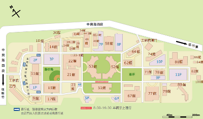

loading progress
Operation Information
press to show/hide where picture was taken.
press to start "jogging" in ITRI.
press to switch map.
about
ITRI在公共空間的維護上很用心，在院內四季都可以觀賞到不同的景觀。 試著把照片跟地點結合在一起，像RPG主角一樣去不同的地點看照片。 此外也加入一個慢跑路徑，位置會沿著ITRI一圈2.8K 的路徑移動，就像平常慢跑一樣。 每年ITRI都會舉辦兩次工研路跑，沿著院內的主要道路，總長約2.8km。
(press to read more.)
TimeWrapper是一個網路上的時間地圖平台，可以在這個平台上建置隨著時間軸、地圖看照片的平台，自己也試著建置了
工研時間地圖
。之後開始有一些構想慢慢來實作目前這個網站。
Cooperation
photo gallery
類似的網站
Google服務裡面有一個叫panoramio的網站，可以在Google map上傳照片。
Icon:
Feedback
ntuyusheng@gmail.com